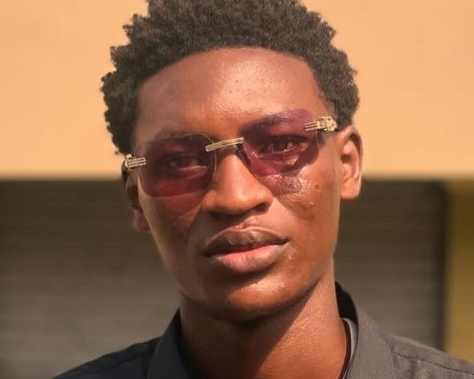

<!DOCTYPE html>
<html lang="en"></html>
<head>
    <meta charset="UTF-8">
    <title>My Resume</title>
</head>
<body>
    <h1>Alabi Emmanuel</h1>
    
    <h2>Summary</h2>
<p>I am a hardworking and dedicated individual, with little experience for now but ready to do whatever it takes to be great</p>
    <hr />
    <h2>Education</h2>
    <ul>
        <li>Bachelor of Arts, Archaeology -  University Of Ibadan (2021-2025)</li>
    </ul>
    <hr />
    <h2>Work Experience</h2>
    <ul>
        <li><h3>Internship With Sycamore Church</h3></li>
        <p>August 2020 - October 2020</p>
        <ul>
            <li>Three months of learning Videography</li>
            <li>Also learnt Video Editing</li>
            <li>Gained knowledge with apps like Photoshop,corel draw e.t.c. </li>
        </ul>
        <li><h3>Social Direcor Chairman</h3></li>
        <p>A Session 2024-2025</p>
        <ul>
            <li>Threw some Successful parties on Campus</li>
        </ul>
    </ul>
<hr />
<h2>Skills</h2>

<ul>
    <li>Videography and camera Operation</li>
    <li>Video editing and post production</li>
</ul>
<hr />
<h2>Awards and Certification</h2>
<ul><li>Best Executive of the year</li></ul>
<hr />
<h2>Other</h2>
<ul>
    <a href="./Hobbies.html">My Hobbies</a>
    <br />
    <a href="./contact.html">Contact me</a>
</ul>
</body>